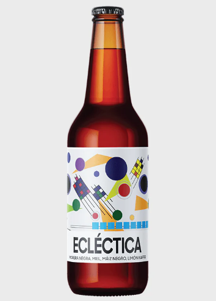

La cerveza (del latín cerevisĭa) es una bebida alcohólica, no destilada, de sabor amargo, que se fabrica con granos de cebada germinados u otros cereales cuyo almidón se fermenta en agua con levadura (principalmente Saccharomyces cerevisiae o Saccharomyces pastorianus) y se aromatiza a menudo con lúpulo, entre otras plantas.12 Es la bebida alcohólica más consumida del mundo, y una de las bebidas más consumidas en general, solo por detrás del agua, el té y el café.3
De ella se conocen varios tipos con una amplia gama de matices, debidos a las diferentes formas de elaboración y a los ingredientes utilizados. Generalmente presenta un color ambarino con tonos que van del amarillo oro al negro pasando por los marrones rojizos. Se la considera «gaseosa» (contiene CO2 disuelto en saturación que se manifiesta en forma de burbujas a la presión ambiente) y suele estar coronada de una espuma más o menos persistente. Su aspecto puede ser cristalino o turbio. Su graduación alcohólica puede alcanzar hasta cerca de los 20 % vol., aunque comúnmente se encuentra entre los 4 % y los 6 % vol.
¿Sabías qué?
En cantidades reducidas puede ser saludable!
Aunque el consumo excesivo de alcohol puede ser perjudicial para la salud, la cerveza en cantidades moderadas puede tener beneficios, ya que contiene antioxidantes, vitaminas, minerales y compuestos naturales que pueden ayudar a mejorar la salud cardiovascular, prevenir enfermedades y contribuir a la hidratación del cuerpo.